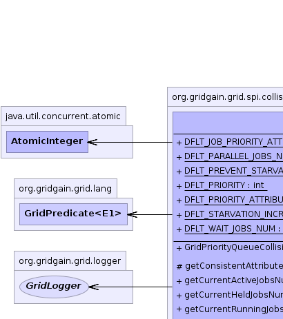
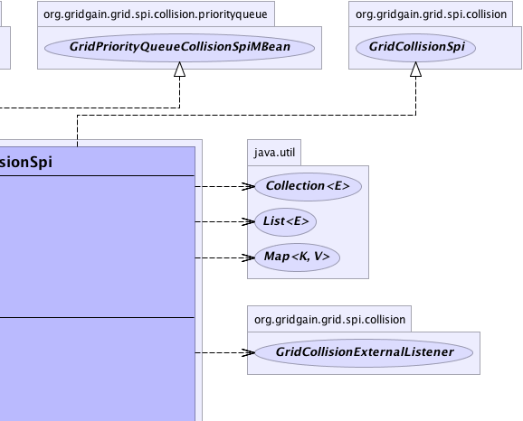
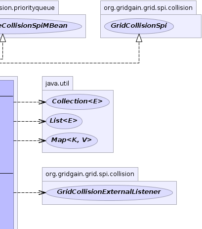
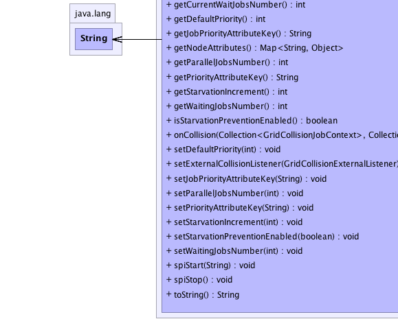
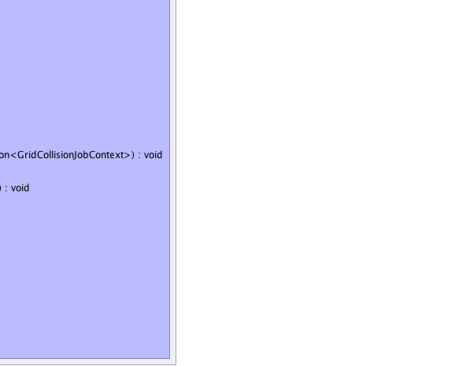
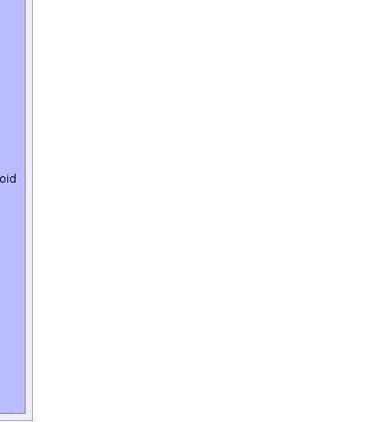

org.gridgain.grid.spi.GridSpiAdapter
org.gridgain.grid.spi.collision.priorityqueue.GridPriorityQueueCollisionSpi
org.gridgain.grid.spi.GridSpiAdapter
org.gridgain.grid.spi.collision.priorityqueue.GridPriorityQueueCollisionSpi
|
GridGain™ 3.1.1c
Community Edition |
|||||||||
| PREV CLASS NEXT CLASS | FRAMES NO FRAMES | |||||||||
| SUMMARY: NESTED | FIELD | CONSTR | METHOD | DETAIL: FIELD | CONSTR | METHOD | |||||||||
java.lang.Object
@GridSpiInfo(author="GridGain Systems, Inc.",
url="www.gridgain.com",
email="support@gridgain.com",
version="3.1.1c.11072011")
@GridSpiMultipleInstancesSupport(value=true)
public class GridPriorityQueueCollisionSpi
This class provides implementation for Collision SPI based on priority queue. Jobs are first ordered
by their priority, if one is specified, and only first GridPriorityQueueCollisionSpi.getParallelJobsNumber() jobs
is allowed to execute in parallel. Other jobs will be queued up.
GridPriorityQueueCollisionSpi.setParallelJobsNumber(int)).
This number should usually be set to no greater than number of threads in the execution thread pool.
GridPriorityQueueCollisionSpi.getPriorityAttributeKey()). Prior to
returning from GridTask.map(List, Object) method, task implementation should
set a value into the task session keyed by this attribute key. See GridTaskSession
for more information about task session.
GridPriorityQueueCollisionSpi.getJobPriorityAttributeKey()).
It is used for specifying job priority.
See GridJobContext for more information about job context.
GridPriorityQueueCollisionSpi.getDefaultPriority()). It is used when no priority is set.GridPriorityQueueCollisionSpi.getStarvationIncrement()).
It is used for increasing priority when job gets bumped down.
This future is used for preventing starvation waiting jobs execution.
GridPriorityQueueCollisionSpi.isStarvationPreventionEnabled()).
It is used for enabling increasing priority when job gets bumped down.
This future is used for preventing starvation waiting jobs execution.
GridPriorityQueueCollisionSpi colSpi = new GridPriorityQueueCollisionSpi(); // Execute all jobs sequentially by setting parallel job number to 1. colSpi.setParallelJobsNumber(1); GridConfigurationAdapter cfg = new GridConfigurationAdapter(); // Override default collision SPI. cfg.setCollisionSpi(colSpi); // Starts grid. G.start(cfg);Here is Spring XML configuration example:
<property name="collisionSpi">
<bean class="org.gridgain.grid.spi.collision.priorityqueue.GridPriorityQueueCollisionSpi">
<property name="priorityAttributeKey" value="myPriorityAttributeKey"/>
<property name="parallelJobsNumber" value="10"/>
</bean>
</property>
This example demonstrates how urgent task may be declared with a higher priority value.
Priority SPI guarantees (see its configuration in example above, where number of parallel
jobs is set to 1) that all jobs from MyGridUrgentTask will most likely
be activated first (one by one) and jobs from MyGridUsualTask with lowest priority
will wait. Once higher priority jobs complete, lower priority jobs will be scheduled.
public class MyGridUsualTask extends GridTaskSplitAdapter<Object, Object> {
public static final int SPLIT_COUNT = 20;
@GridTaskSessionResource
private GridTaskSession taskSes;
@Override
protected Collection<? extends GridJob> split(int gridSize, Object arg) throws GridException {
...
// Set low task priority (note that attribute name is used by the SPI
// and should not be changed).
taskSes.setAttribute("grid.task.priority", 5);
Collection<GridJob> jobs = new ArrayList<GridJob>(SPLIT_COUNT);
for (int i = 1; i <= SPLIT_COUNT; i++) {
jobs.add(new GridJobAdapter<Integer>(i) {
...
});
}
...
}
}
and
public class MyGridUrgentTask extends GridTaskSplitAdapter<Object, Object> {
public static final int SPLIT_COUNT = 5;
@GridTaskSessionResource
private GridTaskSession taskSes;
@Override
protected Collection<? extends GridJob> split(int gridSize, Object arg) throws GridException {
...
// Set high task priority (note that attribute name is used by the SPI
// and should not be changed).
taskSes.setAttribute("grid.task.priority", 10);
Collection<GridJob> jobs = new ArrayList<GridJob>(SPLIT_COUNT);
for (int i = 1; i <= SPLIT_COUNT; i++) {
jobs.add(new GridJobAdapter<Integer>(i) {
...
});
}
...
}
}

For information about Spring framework visit www.springframework.org
| Wiki | |
| Forum |
|  |  |  |
|  |  |  |
| Field Summary | |
|---|---|
static String |
DFLT_JOB_PRIORITY_ATTRIBUTE_KEY
Default job priority attribute key (value is grid.job.priority). |
static int |
DFLT_PARALLEL_JOBS_NUM
Default number of parallel jobs allowed (value is 95 which is
slightly less same as default value of threads in the execution thread pool
to allow some extra threads for system processing). |
static boolean |
DFLT_PREVENT_STARVATION_ENABLED
Default flag for preventing starvation of lower priority jobs. |
static int |
DFLT_PRIORITY
Default priority that will be assigned if job does not have a priority attribute set (value is 0). |
static String |
DFLT_PRIORITY_ATTRIBUTE_KEY
Default priority attribute key (value is grid.task.priority). |
static int |
DFLT_STARVATION_INCREMENT
Default value on which job priority will be increased every time when job gets bumped down. |
static int |
DFLT_WAIT_JOBS_NUM
Default waiting jobs number. |
| Constructor Summary | |
|---|---|
GridPriorityQueueCollisionSpi()
|
|
| Method Summary | |
|---|---|
protected List<String> |
getConsistentAttributeNames()
Returns back a list of attributes that should be consistent for this SPI. |
int |
getCurrentActiveJobsNumber()
Gets current number of jobs that are active, i.e. |
int |
getCurrentHeldJobsNumber()
Gets number of currently 'held' jobs. |
int |
getCurrentRunningJobsNumber()
|
int |
getCurrentWaitJobsNumber()
Gets current number of jobs that wait for the execution. |
int |
getDefaultPriority()
Gets default priority to use if a job does not have priority attribute set. |
String |
getJobPriorityAttributeKey()
Gets key name of job priority attribute. |
Map<String,Object> |
getNodeAttributes()
This method is called before SPI starts (before method GridSpi.spiStart(String)
is called). |
int |
getParallelJobsNumber()
Gets number of jobs that can be executed in parallel. |
String |
getPriorityAttributeKey()
Gets key name of task priority attribute. |
int |
getStarvationIncrement()
Gets value to increment job priority by every time a lower priority job gets behind a higher priority job. |
int |
getWaitingJobsNumber()
Maximum number of jobs that are allowed to wait in waiting queue. |
boolean |
isStarvationPreventionEnabled()
Gets flag indicating whether job starvation prevention is enabled. |
void |
onCollision(Collection<GridCollisionJobContext> waitJobs,
Collection<GridCollisionJobContext> activeJobs)
This is a callback called when either new grid job arrived or executing job finished its execution. |
void |
setDefaultPriority(int dfltPriority)
Sets default job priority. |
void |
setExternalCollisionListener(GridCollisionExternalListener lsnr)
Listener to be set for notification of external collision events (e.g. job stealing). |
void |
setJobPriorityAttributeKey(String jobAttrKey)
Sets job priority attribute key. |
void |
setParallelJobsNumber(int parallelJobsNum)
Sets number of jobs that are allowed to be executed in parallel on this node. |
void |
setPriorityAttributeKey(String taskAttrKey)
Sets task priority attribute key. |
void |
setStarvationIncrement(int starvationInc)
Sets value to increment job priority by every time a lower priority job gets behind a higher priority job. |
void |
setStarvationPreventionEnabled(boolean preventStarvation)
Enables/disabled job starvation (default is enabled). |
void |
setWaitingJobsNumber(int waitJobsNum)
Sets maximum number of jobs that are allowed to wait in waiting queue. |
void |
spiStart(String gridName)
This method is called to start SPI. |
void |
spiStop()
This method is called to stop SPI. |
String |
toString()
|
| Methods inherited from class org.gridgain.grid.spi.GridSpiAdapter |
|---|
assertParameter, configInfo, createSpiAttributeName, getAuthor, getGridGainHome, getLocalNodeId, getName, getSpiContext, getStartTimestamp, getStartTimestampFormatted, getUpTime, getUpTimeFormatted, getVendorEmail, getVendorUrl, getVersion, injectables, onContextDestroyed, onContextInitialized, registerMBean, setJson, setName, startInfo, startStopwatch, stopInfo, unregisterMBean |
| Methods inherited from class java.lang.Object |
|---|
clone, equals, finalize, getClass, hashCode, notify, notifyAll, wait, wait, wait |
| Methods inherited from interface org.gridgain.grid.spi.GridSpi |
|---|
getName, onContextDestroyed, onContextInitialized |
| Methods inherited from interface org.gridgain.grid.spi.GridSpiJsonConfigurable |
|---|
setJson |
| Methods inherited from interface org.gridgain.grid.spi.GridSpiManagementMBean |
|---|
getAuthor, getGridGainHome, getLocalNodeId, getName, getStartTimestamp, getStartTimestampFormatted, getUpTime, getUpTimeFormatted, getVendorEmail, getVendorUrl, getVersion |
| Field Detail |
|---|
public static final int DFLT_PARALLEL_JOBS_NUM
95 which is
slightly less same as default value of threads in the execution thread pool
to allow some extra threads for system processing).
public static final int DFLT_WAIT_JOBS_NUM
Integer.MAX_VALUE.
public static final String DFLT_PRIORITY_ATTRIBUTE_KEY
grid.task.priority).
public static final String DFLT_JOB_PRIORITY_ATTRIBUTE_KEY
grid.job.priority).
public static final int DFLT_PRIORITY
0).
public static final int DFLT_STARVATION_INCREMENT
public static final boolean DFLT_PREVENT_STARVATION_ENABLED
| Constructor Detail |
|---|
public GridPriorityQueueCollisionSpi()
| Method Detail |
|---|
@GridSpiConfiguration(optional=true) public void setParallelJobsNumber(int parallelJobsNum)
If not provided, default value is {@link #DFLT_PARALLEL_JOBS_NUM}.
parallelJobsNum - Maximum number of jobs to be executed in parallel.public int getParallelJobsNumber()
getParallelJobsNumber in interface GridPriorityQueueCollisionSpiMBean@GridSpiConfiguration(optional=true) public void setWaitingJobsNumber(int waitJobsNum)
GridPriorityQueueCollisionSpi.DFLT_WAIT_JOBS_NUM constant.
waitJobsNum - Maximum waiting jobs number.public int getWaitingJobsNumber()
getWaitingJobsNumber in interface GridPriorityQueueCollisionSpiMBeanpublic int getCurrentWaitJobsNumber()
getCurrentWaitJobsNumber in interface GridPriorityQueueCollisionSpiMBeanpublic int getCurrentActiveJobsNumber()
'running + held' jobs.
getCurrentActiveJobsNumber in interface GridPriorityQueueCollisionSpiMBeanpublic int getCurrentRunningJobsNumber()
getCurrentRunningJobsNumber in interface GridPriorityQueueCollisionSpiMBeanpublic int getCurrentHeldJobsNumber()
'held' jobs.
getCurrentHeldJobsNumber in interface GridPriorityQueueCollisionSpiMBean'held' jobs.@GridSpiConfiguration(optional=true) public void setPriorityAttributeKey(String taskAttrKey)
GridTaskSession.getAttribute(Object)).
If not provided, default value is {@link #DFLT_PRIORITY_ATTRIBUTE_KEY}.
taskAttrKey - Priority session attribute key.@GridSpiConfiguration(optional=true) public void setJobPriorityAttributeKey(String jobAttrKey)
GridJobContext.getAttribute(Object)).
If not provided, default value is {@link #DFLT_JOB_PRIORITY_ATTRIBUTE_KEY}.
jobAttrKey - Job priority attribute key.public String getPriorityAttributeKey()
getPriorityAttributeKey in interface GridPriorityQueueCollisionSpiMBeanpublic String getJobPriorityAttributeKey()
getJobPriorityAttributeKey in interface GridPriorityQueueCollisionSpiMBeanpublic int getDefaultPriority()
getDefaultPriority in interface GridPriorityQueueCollisionSpiMBeanpublic int getStarvationIncrement()
getStarvationIncrement in interface GridPriorityQueueCollisionSpiMBeanpublic boolean isStarvationPreventionEnabled()
isStarvationPreventionEnabled in interface GridPriorityQueueCollisionSpiMBean@GridSpiConfiguration(optional=true) public void setDefaultPriority(int dfltPriority)
If not provided, default value is {@link #DFLT_PRIORITY}.
dfltPriority - Default job priority.@GridSpiConfiguration(optional=true) public void setStarvationIncrement(int starvationInc)
If not provided, default value is {@link #DFLT_STARVATION_INCREMENT }.
starvationInc - Job priority increment value.@GridSpiConfiguration(optional=true) public void setStarvationPreventionEnabled(boolean preventStarvation)
If not provided, default value is {@link #DFLT_PREVENT_STARVATION_ENABLED }.
preventStarvation - Flag to enable job starvation prevention.public Map<String,Object> getNodeAttributes() throws GridSpiException
GridSpi.spiStart(String)
is called). It allows SPI implementation to add attributes to a local
node. Kernel collects these attributes from all SPI implementations
loaded up and then passes it to discovery SPI so that they can be
exchanged with other nodes.
getNodeAttributes in interface GridSpigetNodeAttributes in class GridSpiAdapterGridSpiException - Throws in case of any error.
public void spiStart(String gridName)
throws GridSpiException
spiStart in interface GridSpiGridSpiException - Throws in case of any error during SPI start.gridName - Name of grid instance this SPI is being started for
(null for default grid).
public void spiStop()
throws GridSpiException
Note that this method can be called at any point including during recovery of failed start. It should make no assumptions on what state SPI will be in when this method is called.
spiStop in interface GridSpiGridSpiException - Thrown in case of any error during SPI stop.public void setExternalCollisionListener(GridCollisionExternalListener lsnr)
GridGain uses this listener to enable job stealing from overloaded to underloaded nodes.
However, you can also utilize it, for instance, to provide time based collision
resolution. To achieve this, you most likely would mark some job by setting a certain
attribute in job context (see GridJobContext) for a job that requires
time-based scheduling and set some timer in your SPI implementation that would wake up
after a certain period of time. Once this period is reached, you would notify this
listener that a collision resolution should take place. Then inside of your collision
resolution logic, you would find the marked waiting job and activate it.
Note that most collision SPI's might not have external collisions. In that case, they should simply ignore this method and do nothing when listener is set.
setExternalCollisionListener in interface GridCollisionSpilsnr - Listener for external collision events.public void onCollision(Collection<GridCollisionJobContext> waitJobs, Collection<GridCollisionJobContext> activeJobs)
Implementation of this method should act on two lists, each of which contains collision
job contexts that define a set of operations available during collision resolution. Refer to
GridCollisionJobContext documentation for more information.
onCollision in interface GridCollisionSpiwaitJobs - Ordered collection of collision contexts for jobs that are currently waiting
for execution. It can be empty but never null. Note that a new newly
arrived job, if any, will always be represented by the last item in this list.activeJobs - Ordered collection of collision contexts for jobs that are currently executing.
It can be empty but never null.protected List<String> getConsistentAttributeNames()
getConsistentAttributeNames in class GridSpiAdapterpublic String toString()
toString in class Object
|
GridGain™ 3.1.1c
Community Edition |
|||||||||
| PREV CLASS NEXT CLASS | FRAMES NO FRAMES | |||||||||
| SUMMARY: NESTED | FIELD | CONSTR | METHOD | DETAIL: FIELD | CONSTR | METHOD | |||||||||
|
GridGain - High Performance Cloud Computing
|
|

|
|